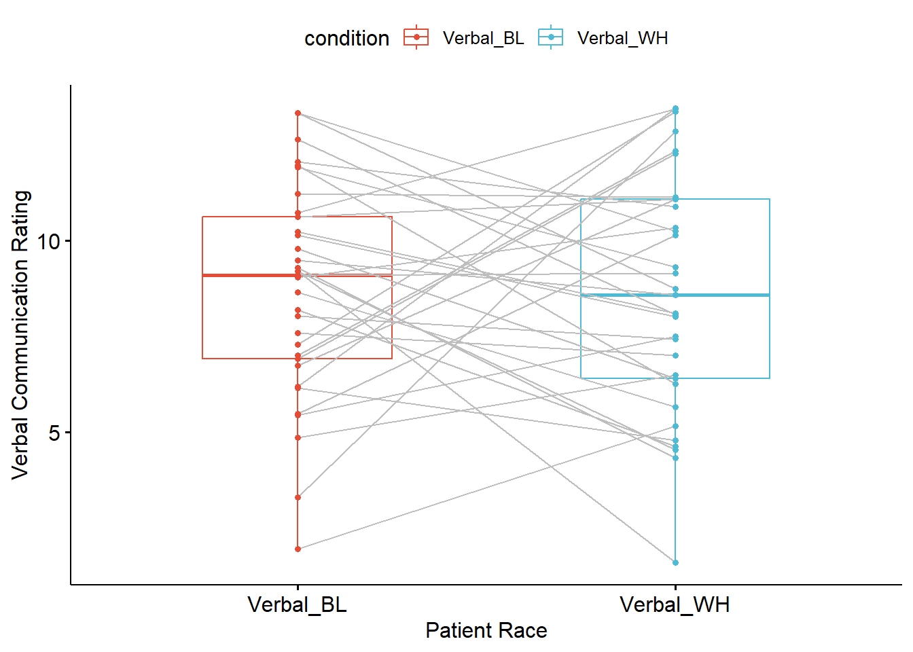
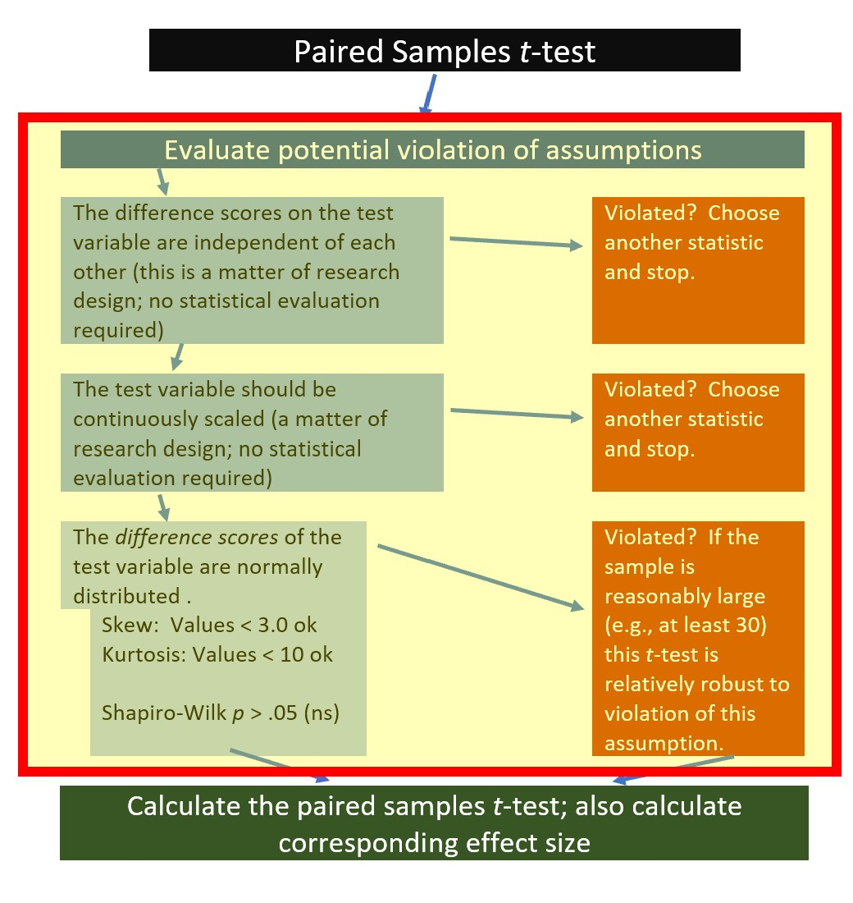

Chapter 6 Paired Samples t-test
Researchers are often interested in knowing if participants score differently on some outcome variable (like affective well-being) across two conditions. These conditions could be before and after an intervention; they could also be interventionless exposures such as scary versus funny movies. In these simple designs, the paired t-test can be used to test the researchers’ hypotheses.
6.2 Introducing the Paired Samples t-test
There are a couple of typical use cases for the paired samples t-test. Repeated measures or change-over-time is a very common use. In this case, the research participant may take a pre-test, be exposed to an intervention or other type of stimulus, then take a post-test. Owing to the limitations of the statistics, all participants must be exposed to the same intervention/stimulus.
A second common use is the assessment of a research participant in two competing conditions. An example might be the galvanic skin response ratings when a participant’s hand is submerged in ice versus the GSR ratings when the hand is not exposed in ice. A strength of this design is the within-subjects’ control of the participant.

In the formula for the paired samples t-test we see a \(\bar{D}\) in the numerator. This represents the difference between the continuously scaled scores in the two conditions. The denominator involves a standard deviation of the difference scores (\(\hat\sigma_D\)) and the square root of the sample size.
\[t = \frac{\bar{D}}{\hat\sigma_D / \sqrt{N}}\] Although these types of research design and analyses are quite handy, they have some limitations. First, the paired samples t-test cannot establish causality because it lacks elements such as comparing conditions (e.g., treatment vs. control) and random assignment to those conditions. If a research wants to compare pre-post change as a result of participating in more-than-one condition, a mixed design ANOVA would be a better option. Second, the paired samples t-test cannot accommodate more than two comparison conditions. If the researcher wants to compare three or or more time periods or conditions, they will want to consider repeated measures ANOVA or multilevel/hierarchical linear modeling.
6.2.1 Workflow for Paired Samples t-test
The following is a proposed workflow for conducting the paired samples t-test.

If the data meets the assumptions associated with the research design (e.g., independence of difference scores and a continuously scaled metric for that difference score), these are the steps for the analysis of an independent samples t-test:
- Prepare (upload) data.
- Explore data with
- graphs
- descriptive statistics
- Assess normality of the difference scores via skew and kurtosis
- Compute the paired samples t-test
- Compute an effect size (frequently the d or eta statistic)
- Manage Type I error
- Sample size/power analysis (which you should think about first, but in the context of teaching statistics, it’s more pedagogically sensible, here).
6.3 Research Vignette
Empirically published articles where t-tests are the primary statistic are difficult to locate. Having exhausted the psychology archives, I located this article in an interdisciplinary journal focused on palliative medicine. The research vignette for this lesson examined differences in physician’s verbal and nonverbal communication with Black and White patients at the end of life (Elliott et al., 2016).
Elliott and colleagues (2016) were curious to know if hospital-based physicians (56% White, 26% Asian, 7.4% each Black and Hispanic) engaged in verbal and nonverbal communication differently with Black and White patients. Black and White patient participants were matched on characteristics deemed important to the researchers (e.g., critically and terminally ill, prognostically similar). Interactions in the intensive care unit were audio and video recorded and then coded on dimensions of verbal and nonverbal communication.
Because each physician saw a pair of patients (i.e., one Black patient and one White patient), the researchers utilized a paired samples, or dependent t-test. This statistical choice was consistent with the element of the research design that controlled for physician effects through matching patients on critical characteristics. Below are the primary findings of the study.
| Black Patients | White Patients | ||
|---|---|---|---|
| Category | Mean(SD) | Mean(SD) | p-value |
| Verbal skill score (range 0 - 27) | 8.37(3.36) | 8.41(3.21) | 0.958 |
| Nonverbal skill score (range 0 - 5) | 2.68(.84) | 2.93(.77) | 0.014 |
The primary analysis utilized by Elliott and colleagues (2016) was the paired samples t-test. We will replicate that exact analysis with simulated data.
6.3.1 Simulating Data for the Paired Samples t-test
Below is the code I used to simulate the data. The following code assumes 33 physician participants who had separate interactions with critically ill, end-of-life stage patients, who were identified as Black and White. The Elliott et al. (2016) manuscript describe the process for coding verbal and nonverbal communication for video/audio recordings of the physician/patient interactions. Using that data, I simulate verbal and nonverbal communication scores for 33 physicians who rate patients who identify as Black and White, respectively. This creates four variables.
In the lesson, we will compare verbal communication scores. The nonverbal communication score is available as an option for practice.
── Attaching core tidyverse packages ──────────────────────── tidyverse 2.0.0 ──
✔ dplyr 1.1.2 ✔ readr 2.1.4
✔ forcats 1.0.0 ✔ stringr 1.5.0
✔ ggplot2 3.4.2 ✔ tibble 3.2.1
✔ lubridate 1.9.2 ✔ tidyr 1.3.0
✔ purrr 1.0.1
── Conflicts ────────────────────────────────────────── tidyverse_conflicts() ──
✖ dplyr::filter() masks stats::filter()
✖ dplyr::lag() masks stats::lag()
ℹ Use the conflicted package (<http://conflicted.r-lib.org/>) to force all conflicts to become errors# Setting the seed. If you choose this practice option, change the
# number below to something different.
set.seed(220817)
# These define the characteristics of the verbal variable. It is
# essential that the object names (e.g., A_mean) are not changed
# because they will be fed to the function in the faux package.
sub_n <- 33
A_mean <- 8.37
B_mean <- 8.41
A_sd <- 3.36
B_sd <- 3.21
AB_r <- 0.3
# the faux package can simulate a variety of data. This function
# within the faux package will use the objects above to simulate
# paired samples data
paired_V <- faux::rnorm_multi(n = sub_n, vars = 2, r = AB_r, mu = c(A_mean,
B_mean), sd = c(A_sd, B_sd), varnames = c("Verbal_BL", "Verbal_WH"))
paired_V <- paired_V %>%
dplyr::mutate(PhysID = row_number())
# Here, I repeated the process for the nonverbal variable.
sub_n <- 33
A_mean <- 2.68
B_mean <- 2.93
A_sd <- 0.84
B_sd <- 0.77
AB_r <- 0.9
paired_NV <- faux::rnorm_multi(n = sub_n, vars = 2, r = AB_r, mu = c(A_mean,
B_mean), sd = c(A_sd, B_sd), varnames = c("NVerb_BL", "NVerb_WH"))
# This code produced an ID number for each physician
paired_NV <- paired_NV %>%
dplyr::mutate(PhysID = row_number())
# This data joined the two sets of data. Note, I did not write any
# code that assumed tha the verbal and nonverbal data came from the
# same physician. Full confession: I'm not quite sure how to do that
# just yet.
dfPairedSamples <- dplyr::full_join(paired_V, paired_NV, by = c("PhysID"))
dfPairedSamples <- dfPairedSamples %>%
dplyr::select(PhysID, everything())Before beginning our analysis, let’s check the format of the variables to see if they are consistent with the scale of measurement of the variables. In our case, we expect to see four variables representing the verbal and nonverbal communication of the physicians with the patients who are identified as Black and White. Each of the variables should be continuously scaled and, therefore, should be formatted as num (numerical).
'data.frame': 33 obs. of 5 variables:
$ PhysID : int 1 2 3 4 5 6 7 8 9 10 ...
$ Verbal_BL: num 8.19 3.3 6.18 4.85 6.91 ...
$ Verbal_WH: num 4.63 12.85 13.47 6.49 12.27 ...
$ NVerb_BL : num 3.099 4.234 0.429 1.835 3.704 ...
$ NVerb_WH : num 2.74 5.02 1.34 2.38 2.91 ...The four variables of interest are correctly formatted as num. Because PhysID (physician ID) will not be used in our analysis, its structure is irrelevant.
Below is code for saving (and then importing) the data in .csv or .rds files. I make choices about saving data based on what I wish to do with the data. If I want to manipulate the data outside of R, I will save it as a .csv file. It is easy to open .csv files in Excel. A limitation of the .csv format is that it does not save any restructuring or reformatting of variables. For this lesson, this is not an issue.
Here is code for saving the data as a .csv and then reading it back into R. I have hashtagged these out, so you will need to remove the hashtags if you wish to run any of these operations.
# writing the simulated data as a .csv write.table(dfPairedSamples,
# file = 'dfPairedSamples.csv', sep = ',', col.names=TRUE,
# row.names=FALSE) at this point you could clear your environment and
# then bring the data back in as a .csv reading the data back in as a
# .csv file dfPairedSamples<- read.csv ('dfPairedSamples.csv', header
# = TRUE)The .rds form of saving variables preserves any formatting (e.g., creating ordered factors) of the data. A limitation is that these files are not easily opened in Excel. Here is the hashtagged code (remove hashtags if you wish to do this) for writing (and then reading) this data as an .rds file.
6.3.2 Quick Peek at the Data
Plotting the data is a helpful early step in any data analysis. Further, visualizing the data can help us with a conceptual notion of the statistic we are utilizing. The ggpubr package is one of my go-to-tools for quick and easy plots of data. The ggpaired() function is especially appropriate for paired data. A tutorial is available at datanovia.
Especially unique about this function is that the lines connect the scores of each person across time or conditions. In this research scenario, the lines present the amount of time the physicians spent with each of the two patients they treated.
ggpubr::ggpaired(dfPairedSamples, cond1 = "Verbal_BL", cond2 = "Verbal_WH",
color = "condition", line.color = "gray", palette = c("npg"), xlab = "Patient Race",
ylab = "Verbal Communication Rating") The box of the boxplot covers the middle 50% (the interquartile range). The horizontal line is the median. The whiskers represent three standard deviations above and below the mean. Any dots beyond the whiskers are outliers.
6.4 Working the Paired Samples t-Test (by hand)
6.4.1 Stating the Hypothesis
In this lesson, I will focus on differences in the verbal communication variable. Specifically, I hypothesize that physician verbal communication scores for Black and White patients will differ. In the hypotheses below, the null hypothesis (\(\mu_D\)) states that the difference score is zero; the alternative hypothesis (\(\mu_D\)) states that the difference score is different from zero.
\[H_{O}: \mu _{D} = 0\] \[H_{A}: \mu _{D} \neq 0\]
Notice the focus on a difference score. Even though the R package we will use does not require one for calculation, creating one in our df will be useful for preliminary exploration.
# Creating the Verbal_D variable within the dfPairedSamples df Doing
# the 'math' that informs that variable
dfPairedSamples$Verbal_D <- (dfPairedSamples$Verbal_BL - dfPairedSamples$Verbal_WH)
# Displaying the first six rows of the df to show that the difference
# score now exists
head(dfPairedSamples) PhysID Verbal_BL Verbal_WH NVerb_BL NVerb_WH Verbal_D
1 1 8.190342 4.625680 3.0991101 2.742055 3.564663
2 2 3.297486 12.851362 4.2338398 5.024047 -9.553876
3 3 6.176386 13.466880 0.4288566 1.337259 -7.290495
4 4 4.851426 6.488762 1.8347393 2.379431 -1.637336
5 5 6.911155 12.266646 3.7035910 2.914445 -5.355491
6 6 11.965831 6.259292 1.5369696 1.598493 5.706540Examining this new variable, because we subtracted the verbal communication ratings of physicians with White patients from those of Black patients a negative score means that physicians had lower verbal engagement with Black patients; a positive score means that physicians had more verbal engagement with White patients.
6.4.2 Calculating the Paired Samples t-Test
Let’s take another look at the formula for calculating paired samples t-test.
\[t = \frac{\bar{D}}{\hat\sigma_D / \sqrt{N}}\] We can use the data from our preliminary exploration in the calculation.
- The mean difference was .08
- The standard deviation of that difference was 4.14
- The sample size is 33
[1] 0.111006The resultant t value is 0.111
Hopefully, this hand-calculation provided an indication of how the means, standard deviation, and sample sizes contribute to the estimate of this t-test value. Now we ask, “But it is statistically significant?”
6.4.2.1 Statistical Significance
Our t-value was 0.111. We compare this value to the test critical value in a table of t critical values. In-so-doing we must know our degrees of freedom. Because the numerator in a paired samples t-test is a single difference score \(\bar{D}\), the associated degrees of freedom is \(N-1\). We must also specify the p value (in our case .05) and whether-or-not our hypothesis is unidirectional or bi-directional. Our question only asked, “Are the verbal communication levels different?” In this case, the test is two-tailed, or bi-directional.
Let’s return to the table of critical values for the t distribution to compare our t-value (0.111) to the column that is appropriate for our:
- Degrees of freedom (in this case \(N-1\) or 32)
- Alpha, as represented by \(p < .05\)
- Specification as a one-tailed or two-tailed test
- Our alternative hypothesis made no prediction about the direction of the difference; therefore we will use a two-tailed test
In the linked table, when the degrees of freedom reaches 30, there larger intervals. We will use the row representing degrees of freedom of 30. If our t-test value is lower than an absolute value of -2.042 or greater than the absolute value of 2.042, then our means are statistically significantly different from each other. In our case, we have not achieved statistical significance and we cannot say that the means are different. The t string would look like this: \(t(32) = 0.111, p > .05\)
We can also use the qt() function in base R. In the script below, I have indicated an alpha of .05. The “2” that follows indicates I want a two-tailed test. The 32 represents my degrees of freedom (\(N-1\)). In a two-tailed test, the regions of rejection will be below the lowerbound (lower.tail=TRUE) and above the upperbound (lower.tail=FALSE).
[1] -2.036933[1] 2.036933If our t value is below the lowerbound (-2.04) or above the upper bound (2.04), then we have rejected the null hypothesis in favor of the alternative. As we demonstrated in the hand-calculations, we have not. The ratings of physicians’ verbal engagement with patients who are racially identified as Black and White are not statistically significant.
6.4.2.2 Confidence Intervals
How confident are we in our result? With paired samples t-tests, it is common to report an interval in which we are 95% confident that our true mean difference exists. Below is the formula, which involves:
- \(\bar{D}\) the mean difference score
- \(t_{cv}\) the test critical value for a two-tailed model (even if the hypothesis was one-tailed) where \(\alpha = .05\) and the degrees of freedom are \(N-1\)
- \(s_{d}\) the standard deviation of \(\bar{D}\)
- \(N\) sample size
\[\bar{D}\pm t_{cv}(s_{d}/\sqrt{n})\] Let’s calculate it:
First, let’s get the proper t critical value:
[1] -2.036933[1] 2.036933[1] -1.388028[1] 1.548028These values indicate the range of scores in which we are 95% confident that our true \(\bar{D}\) lies. Stated another way, we are 95% confident that the true mean difference lies between -1.39 and 1.55. Because this interval crosses zero, we cannot rule out that the true mean difference is 0.00. This result is consistent with our non-significant p value. For these types of statistics, the 95% confidence interval and p value will always be yoked together.
6.4.2.3 Effect Size
Effect sizes address the magnitude of difference. There are two common effect sizes that are used with the paired samples t-test. The first is the d statistic, which measures, in standard deviation units, the distance between the two means. Regardless of sign, values of .2, .5, and .8 are considered to be small, medium, and large, respectively.
Because the paired samples t-test used the difference score in the numerator, there are two easy options for calculating this effect:
\[d=\frac{\bar{D}}{\hat\sigma_D}=\frac{t}{\sqrt{N}}\]
The first is to use the mean and standard deviation associated with the difference score:
[1] 0.01932367The formula uses the t value and N.
[1] 0.01932262Within rounding error, both calculations result in a value (\(d = 0.02\)) that is quite small.
Eta squared, \(\eta^2\) is the proportion of variance of a test variable that is a function of the grouping variable. A value of 0 indicates that mean of the difference scores is equal to 0, where a value of 1 indicates that the difference scores in the sample are all the same nonzero value, and the test scores do not differ within each group. The following equation can be used to compute \(\eta^2\). Conventionally, values of .01, .06, and .14 are considered to be small, medium, and large effect sizes, respectively.
\[\eta^{2} =\frac{N(\bar{D}^{2})}{N(\bar{D}^{2}+(N-1)(\hat\sigma_D^{^{2}})}=\frac{t^{2}}{t^{2}+(N_{1}-1)}\] The first calculation option uses the N and the mean difference score:
[1] 0.0003849249The second calculation option uses the t values and sample size:
[1] 0.0003848831Within rounding errors, and similar to our d statistic, the \(\eta^2\) value (0.0004) is quite small.
6.5 Working the Paired Samples t-Test with R Packages
Let’s rework the problem in R. We start at the top of the flowchart, evaluating the statistical assumptions.
6.5.1 Evaluating the Statistical Assumptions
With an eye on our data, we can begin to explore the statistical assumptions associated with the paired samples t-test. Here’s where we are in the workflow:
 All statistical tests have some assumptions about the data. The paired-samples t-test has three:
- The difference scores (i.e., the difference on the outcome across time or conditions) on the test variable are independent of each other. This is a matter of research design and no further statistical evaluation is required.
- The test variable should be continuously scaled. This is also a matter of research design and no statistical analysis is required.
- Our test variable is measured in minutes; this is continuously scaled and has the properties of interval-level data.
- The difference scores of the test variable are normally distributed. We can check this several ways:
- visually with histograms (perhaps with superimposed curves) and boxplots,
- calculation of skew and kurtosis values,
- calculation of the Shapiro-Wilk test of normality
6.5.1.1 Are the difference scores of the test variable normally distributed?
We can begin to evaluate normality by obtaining the descriptive statistics with the describe() function from the psych package.
vars n mean sd median trimmed mad min max range skew
PhysID 1 33 17.00 9.67 17.00 17.00 11.86 1.00 33.00 32.00 0.00
Verbal_BL 2 33 8.70 2.80 9.09 8.80 3.10 1.94 13.34 11.40 -0.35
Verbal_WH 3 33 8.62 3.08 8.57 8.65 3.44 1.59 13.47 11.88 -0.15
NVerb_BL 4 33 2.73 1.00 2.63 2.78 1.26 0.43 4.23 3.80 -0.37
NVerb_WH 5 33 2.89 0.85 2.94 2.87 0.64 1.34 5.02 3.69 0.25
Verbal_D 6 33 0.08 4.14 0.61 0.27 4.11 -9.55 7.61 17.17 -0.42
kurtosis se
PhysID -1.20 1.68
Verbal_BL -0.31 0.49
Verbal_WH -0.75 0.54
NVerb_BL -0.71 0.17
NVerb_WH -0.02 0.15
Verbal_D -0.54 0.72We observe that the skew and kurtosis values for Verbal_BL and Verbal_WH are well below the areas of concern (below the absolute value of 3 for skew; below the absolute values of 10 for kurtosis) identified by Kline (2016a).
Recall, though that the normality assumption for the paired samples t-test concerns the difference score (Verbal_D). We see that the mean difference is 0.08 (SD = 4.14). Its skew (-0.42) and kurtosis (-0.54) are also well-below the thresholds of concern.
Beyond skew and kurtosis, we can formally test for deviations from normality with a Shapiro-Wilk. We want the results to be non-significant.
# A tibble: 1 × 3
variable statistic p
<chr> <dbl> <dbl>
1 Verbal_D 0.973 0.572Results of the Shapiro-Wilk test of normality are not statistically significant \((W = 0.97, p = 0.57)\). This means that the distribution of difference scores is not statistically significantly different from a normal distribution.
6.5.1.2 APA style write-up of testing the assumptions
My practice is to create APA style drafts of the different sections of the analysis as I work along. Here’s how I might capture our evaluation of the statistical assumptions:
We began by analyzing the data to see if it met the statistical assumptions for analysis with a paired samples t-test. One assumption is that the difference scores of dependent variable are normally distributed. We evaluated skew and kurtosis using Kline’s (2016a) guidelines of the absolute values of 3 (skew) and 10 (kurtosis). Our results were well-within these boundary conditions. Further, a non-significant Shapiro-Wilk test of normality suggested that the distribution of difference scores was not statistically significant from a normal distribution \((W = 0.97, p = 0.57)\).
6.5.2 Computing the Paired Samples t-Test
We are ready to compute the paired samples t-test.
Calculating a paired samples t-test is possible through base R and a number of packages. Kassambara’s (n.d.-b) rstatix package is one we can use for all of the t-test and ANOVA problems that we will work.
A challenge in evaluating within-persons data is the shape of the data. The simulation resulted in a wide (also termed person-level or multivariate) format, where each of the 33 physicians has the verbal and non-verbal communication scores with Black and White patients. We need to reshape the data to a long (also termed person-period or univariate) format. Although it may seem a bit tricky at first, this is a skill you will return to in many longitudinal or repeated measures analyses.
In the script below we are using the melt() and setDT functions from the data.table package. We put stable (i.e., time-invarient, “one-per-person”) variables in a concatonated variable list of “id.vars.” We create separate lists of the variables that change over time. In this case, each physician saw one Black patient and one White patient. Therefore, every physician will have two rows of data. For each variable collected at both points, we create concatonated lists.
df_long <- data.table::melt(data.table::setDT(dfPairedSamples), id.vars = c("PhysID"),
measure.vars = list(c("Verbal_BL", "Verbal_WH"), c("NVerb_BL", "NVerb_WH")))
head(df_long) PhysID variable value1 value2
1: 1 1 8.190342 3.0991101
2: 2 1 3.297486 4.2338398
3: 3 1 6.176386 0.4288566
4: 4 1 4.851426 1.8347393
5: 5 1 6.911155 3.7035910
6: 6 1 11.965831 1.5369696While that code performed the magic, it did not name the variables. We must provide that in separate code.
After the reshaping, let’s recheck the structure of our data:
Classes 'data.table' and 'data.frame': 66 obs. of 4 variables:
$ PhysID : int 1 2 3 4 5 6 7 8 9 10 ...
$ PatientRace: Factor w/ 2 levels "1","2": 1 1 1 1 1 1 1 1 1 1 ...
$ Verbal : num 8.19 3.3 6.18 4.85 6.91 ...
$ Nonverbal : num 3.099 4.234 0.429 1.835 3.704 ...
- attr(*, ".internal.selfref")=<externalptr> The dependent variables Verbal and Nonverbal are continuously scaled, so the num designation is appropriate. Similarly, PatientRace is categorical, so Factor is appropriate. Because labels (instead of numbers) can minimize misinterpretation (or forgetting), I would prefer to use “Black” and “White” as opposed to “1” and “2”. To further reduce the possibility of error, it is easy enough to create a second, parallel, variable.
We are now ready to perform the paired samples t-test. In the script below:
- the first element points to the dataframe
- the second element provides a “formula”
- we are predicting “Verbal” from “PtRace”
- specifying “detailed = TRUE” will produce the 95% confidence interval around the difference
# A tibble: 1 × 13
estimate .y. group1 group2 n1 n2 statistic p df conf.low
* <dbl> <chr> <chr> <chr> <int> <int> <dbl> <dbl> <dbl> <dbl>
1 0.0813 Verbal Black White 33 33 0.113 0.911 32 -1.39
# ℹ 3 more variables: conf.high <dbl>, method <chr>, alternative <chr>This output provides information to get us started in drafting the APA style results. Identical to all the information we hand-calculated, we would write the t string this way: \(t(32) = 0.113, p = .911, CI95(-1.39, 1.55)\). Our results show that the mean difference in physician verbal communication scores with Black and White patients was 0.081. Taking a look at the confidence interval, we are 95% confident that the true difference in means falls between the values of -1.386 and 1.549. What is critically important is that this confidence interval crosses zero. There is an important link between the CI95% and statistical significance. When the CI95% includes zero, p will not be lower than 0.05.
We still need to calculate the effect size.
# A tibble: 1 × 7
.y. group1 group2 effsize n1 n2 magnitude
* <chr> <chr> <chr> <dbl> <int> <int> <ord>
1 Verbal Black White 0.0196 33 33 negligibleKeeping in mind the interpretive criteria of .2, .5, and .8, as small, medium, and large effect sizes, we see that \(d = 0.020\) is quite small. We can add it to our t-string and draft the results: \(t(32) = 0.113, p = .911, d = 0.020, CI95(-1.39, 1.55)\).
6.6 APA Style Results
Putting it altogether we can assemble an APA style results section. Code for a table of means, standard deviations, and correlation follow the write-up of results. For inclusion in a manuscript, I would rework the export of the table to delete the difference score (i.e., Verbal_D). I might also exclude the rows of confidence intervals around the correlations.
We began by analyzing the data to see if it met the statistical assumptions for analysis with a paired samples t-test. One assumption is that the difference scores of dependent variable are normally distributed. We evaluated skew and kurtosis using Kline’s (2016a) guidelines of the absolute values of 3 (skew) and 10 (kurtosis). Our results were well-within these boundary conditions. Further, a non-significant Shapiro-Wilk test of normality suggested that the distribution of difference scores was not statistically significant from a normal distribution \((W = 0.97, p = 0.57)\).
A paired samples t-test was conducted to evaluate the hypothesis that there would be differences in the degree of physicians’ verbal engagement as a function of the patient’s race (Black, White). The paired samples t-test was nonsignificant, t(32) = 0.133, p = .911. The small magnitude of the effect size (d = 0.02) was consistent with the nonsignificant result. The 95% confidence interval for the difference in means was quite wide and included the value of zero (95%CI[-1.386, 1.549]). Means and standard deviations are presented in Table 1; the results are illustrated in Figure 1.
library(tidyverse) #needed to use the pipe
# Creating a smaller df to include only the variables I want in the
# table
PairedDescripts <- dfPairedSamples %>%
select(Verbal_BL, Verbal_WH, Verbal_D)
# using the apa.cor.table function for means, standard deviations,
# and correlations the filename command will write the table as a
# word document to your file
apaTables::apa.cor.table(PairedDescripts, table.number = 1, filename = "Tab1_PairedV.doc")
Table 1
Means, standard deviations, and correlations with confidence intervals
Variable M SD 1 2
1. Verbal_BL 8.70 2.80
2. Verbal_WH 8.62 3.08 .01
[-.33, .35]
3. Verbal_D 0.08 4.14 .67** -.74**
[.42, .82] [-.86, -.53]
Note. M and SD are used to represent mean and standard deviation, respectively.
Values in square brackets indicate the 95% confidence interval.
The confidence interval is a plausible range of population correlations
that could have caused the sample correlation (Cumming, 2014).
* indicates p < .05. ** indicates p < .01.
The figure we created earlier in the lesson would be sufficient for a journal article. However, using rstatix in combination with ggpubbr can be quite powerful. The result can be a figure that includes the t-test results and “significance bars.” To do this, we first need to re-run the rstatix::t_test, but adding to it by
- including “add_significance()” script after the pipe, and
- saving it as an object, which I’m naming “pair.test.”
We could have done this in the initial run (but I didn’t want to make the test-statistic unnecessarily confusing).
library(tidyverse)
pair.test <- rstatix::t_test(df_long, Verbal ~ PtRace, paired = TRUE, detailed = TRUE) %>%
rstatix::add_significance()
pair.test# A tibble: 1 × 14
estimate .y. group1 group2 n1 n2 statistic p df conf.low
<dbl> <chr> <chr> <chr> <int> <int> <dbl> <dbl> <dbl> <dbl>
1 0.0813 Verbal Black White 33 33 0.113 0.911 32 -1.39
# ℹ 4 more variables: conf.high <dbl>, method <chr>, alternative <chr>,
# p.signif <chr>Next, we create boxplot code with the long form of our data:
pair.box <- ggpubr::ggpaired(df_long, x = "PtRace", y = "Verbal", order = c("Black",
"White"), line.color = "gray", palette = c("npg"), color = "PtRace",
ylab = "Verbal Communication Rating", xlab = "Patient Race", title = "Figure 1. Physician Verbal Engagement as a Function of Patient Race")
pair.test <- pair.test %>%
rstatix::add_xy_position(x = "PtRace") #autocomputes p-value labels positions
pair.box <- pair.box + ggpubr::stat_pvalue_manual(pair.test, tip.length = 0.01,
y.position = c(15)) + labs(subtitle = rstatix::get_test_label(pair.test,
detailed = TRUE))
pair.box The tools available offer a great deal of flexibility. Determining which figure is best will likely depend on your outlet, your audience, and your personal preferences. For example, a print journal might prefer a black-and-white figure (with no fill in the boxes). This is accomplished easily enough by removing (or, hashtagging out) the “fill = PtRace” argument.
The tools available offer a great deal of flexibility. Determining which figure is best will likely depend on your outlet, your audience, and your personal preferences. For example, a print journal might prefer a black-and-white figure (with no fill in the boxes). This is accomplished easily enough by removing (or, hashtagging out) the “fill = PtRace” argument.
6.7 Power in Paired Samples t-Tests
Researchers often use power analysis packages to estimate the sample size needed to detect a statistically significant effect, if, in fact, there is one. Utilized another way, these tools allows us to determine the probability of detecting an effect of a given size with a given level of confidence. If the probability is unacceptably low, we may want to revise or stop. A helpful overview of power as well as guidelines for how to use the pwr package can be found at a Quick-R website (Kabacoff, 2017).
In Champely’s pwr package, we can conduct a power analysis for a variety of designs, including the paired t-test that we worked in this chapter. There are a number of interrelating elements of power:
- Sample size, n refers to the number of pairs; our vignette had 33
- d refers to the difference between means divided by the pooled standard deviation; we can use the value of Cohen’s d for this
- power refers to the power of a statistical test; conventionally it is set at .80
- sig.level refers to our desired alpha level; conventionally it is set at .05
- type indicates the type of test we ran; ours was “paired”
- alternative refers to whether the hypothesis is non-directional/two-tailed (“two.sided”) or directional/one-tailed(“less” or “greater”)
In this script, we must specify all-but-one parameter; the remaining parameter must be defined as NULL. R will calculate the value for the missing parameter.
When we conduct a “power analysis” (i.e., the likelihood of a hypothesis test detecting an effect if there is one), we specify, “power=NULL”. Using the data from our results, we learn from this first run, that our statistical power was at 5%. That is, given the low value of the mean difference (.08) and the relatively large standard deviation (4.14), we had only a 5% chance of detecting a statistically significant effect if there was one.
pwr::pwr.t.test(d = 0.02, n = 33, power = NULL, sig.level = 0.05, type = "paired",
alternative = "two.sided")
Paired t test power calculation
n = 33
d = 0.02
sig.level = 0.05
power = 0.05142498
alternative = two.sided
NOTE: n is number of *pairs*The results indicate that we were powered at 5%. That is, we had a 5% chance of finding a statistically significant difference, if in fact there was one.
Researchers frequently use these tools to estimate the sample size required to obtain a statistically significant effect. In these scenarios we set n to NULL.
pwr::pwr.t.test(d = 0.02, n = NULL, power = 0.8, sig.level = 0.05, type = "paired",
alternative = "two.sided")
Paired t test power calculation
n = 19624.07
d = 0.02
sig.level = 0.05
power = 0.8
alternative = two.sided
NOTE: n is number of *pairs*Using the results from the simulation of our research vignette, you can see that we would have needed 19624 individuals for the p value to be < .05, if, in fact there were a significant difference.
Let’s see if this is true. Below I will re-simulate the data for the verbal scores, changing only the sample size:
set.seed(220820)
# These define the characteristics of the verbal variable. It is
# essential that the object names (e.g., A_mean) are not changed
# because they will be fed to the function in the faux package.
sub_n <- 19624
A_mean <- 8.37
B_mean <- 8.41
A_sd <- 3.36
B_sd <- 3.21
AB_r <- 0.3
# the faux package can simulate a variety of data. This function
# within the faux package will use the objects above to simulate
# paired samples data
paired_V2 <- faux::rnorm_multi(n = sub_n, vars = 2, r = AB_r, mu = c(A_mean,
B_mean), sd = c(A_sd, B_sd), varnames = c("Verbal_BL", "Verbal_WH"))
paired_V2 <- paired_V2 %>%
dplyr::mutate(PhysID = row_number())
# restructuring data to the long form
df_longV2 <- data.table::melt(data.table::setDT(paired_V2), id.vars = c("PhysID"),
measure.vars = list(c("Verbal_BL", "Verbal_WH")))
df_longV2 <- rename(df_longV2, PatientRace = variable, Verbal = value)
df_longV2$PtRace <- plyr::mapvalues(df_longV2$PatientRace, from = c("Verbal_BL",
"Verbal_WH"), to = c("Black", "White"))Now I will conduct the paired samples t-test and corresponding effect size.
# A tibble: 1 × 13
estimate .y. group1 group2 n1 n2 statistic p df conf.low
* <dbl> <chr> <chr> <chr> <int> <int> <dbl> <dbl> <dbl> <dbl>
1 -0.0343 Verbal Black White 19624 19624 -1.24 0.214 19623 -0.0885
# ℹ 3 more variables: conf.high <dbl>, method <chr>, alternative <chr># A tibble: 1 × 7
.y. group1 group2 effsize n1 n2 magnitude
* <chr> <chr> <chr> <dbl> <int> <int> <ord>
1 Verbal Black White -0.00887 19624 19624 negligibleThe new results remain non-significant: \(t(19623) = -1.243, p = 0.241, d = -0.009, 95CI (-0.088, 0.020)\). This tells me these means are quite similar and this is not a function of being under powered.
Conducting power analyses requires that researchers speculate about their values. In this case, in order to estimate sample size, the researcher would need to make some guesses about the difference scores means and standard deviations. These values could be estimated from prior literature or a pilot study.
6.8 Practice Problems
The suggestions for homework differ in degree of complexity. I encourage you to start with a problem that feels “do-able” and then try at least one more problem that challenges you in some way. Regardless, your choices should meet you where you are (e.g., in terms of your self-efficacy for statistics, your learning goals, and competing life demands).
Additionally, please complete at least one set of hand calculations, that is use the code demonstrated in the chapter to work through the formulas that compute the paired samples t-test. At this stage in your learning, you may ignore any missingness in your dataset by excluding all rows with missing data in your variables of interest.
6.8.1 Problem #1: Rework the research vignette as demonstrated, but change the random seed
If this topic feels a bit overwhelming, simply change the random seed in the data simulation of the research vignette, then rework the problem. This should provide minor changes to the data (maybe even in the second or third decimal point), but the results will likely be very similar. That said, don’t be alarmed if what was non-significant in my working of the problem becomes significant. Our selection of p < .05 (and the corresponding 95% confidence interval) means that 5% of the time there could be a difference in statistical significance.
6.8.2 Problem #2: Rework the research vignette, but change something about the simulation
Rework the paired samples t-test in the lesson by changing something else about the simulation. For example, if you are interested in understanding more about power, consider changing the sample size. Alternatively, you could specify different means and/or standard deviations.
6.8.3 Problem #3: Rework the research vignette, but swap one or more variables
Use the simulated data, but select the nonverbal communication variables that were evaluated in the Elliott et al. (2016) study. Compare your results to those reported in the mansucript.
6.8.4 Problem #4: Use other data that is available to you
Using data for which you have permission and access (e.g., IRB approved data you have collected or from your lab; data you simulate from a published article; data from an open science repository; data from other chapters in this OER), complete a paired samples t-test.
6.8.5 Grading Rubric
Regardless which option(s) you chose, use the elements in the grading rubric to guide you through the practice.
| Assignment Component | Points Possible | Points Earned |
|---|---|---|
| 1. Narrate the research vignette, describing the variables and their role in the analysis | 5 | _____ |
| 2. Simulate (or import) and format data | 5 | _____ |
| 3. Evaluate statistical assumptions | 5 | _____ |
| 4. Conduct a paired samples t-test (with an effect size & 95%CIs) | 5 | _____ |
| 5. APA style results with table(s) and figure | 5 | _____ |
| 6. Conduct power analyses to determine the power of the current study and a recommended sample size | 5 | _____ |
| 7. Explanation to grader | 5 | _____ |
| Totals | 35 | _____ |
| Hand Calculations | Points Poss | Points Earned |
|---|---|---|
| 1. Using traditional NHST (null hypothesis testing language), state your null and alternative hypotheses | 2 | |
| 2. Using an R package or functions in base R (and with data in the “wide” format), calculate the difference score between the two observations of the dependent variable | 2 | |
| 3. Obtain the mean and standard deviation of the difference score | 2 | |
| 4. Calculate the paired samples t-test | 4 | |
| 5. Identify the degrees of freedom associated with your paired samples t-test | 2 | |
| 6. Locate the test critical value for your paired samples t-test | 2 | |
| 7. Is the paired samples t-test statistically significant? Why or why not? | 2 | |
| 8. What is the confidence interval around the mean difference? | 4 | |
| 9. Calculate the effect size (i.e., Cohen’s d associated with your paired samples t-test | 4 | |
| 10. Assemble the results into a statistical string | 4 | |
| Totals* | 28 |
6.9 Homeworked Example
If you wanted to use this example and dataset as a basis for a homework assignment, you could compare a differenc combination of courses and/or score one of the other course evaluation subscales (e.g., socially responsive pedagogy or valued-by-me).
6.9.1 Working the Problem with R and R Packages
6.9.1.1 Narrate the research vignette, describing the variables and their role in the analysis
I want to ask the question, “Do students’ evaluations of traditional pedagogy (TradPed) change from ANOVA (the first course in the series) to Multivariate (the second course in the series)?.” Unlike the independent samples t-test where we compared students in two different departments, we are comparing the same students across two different conditions. In this particular analysis, there is also an element of time. That is the ANOVA class always precedes the multivariate class (with a regression class, taught by a different instructor) in the intervening academic quarter.
This research design has some clear limitations. Threats to internal validity are caused by issues like history and maturation. None-the-less, for the purpose of a statistical demonstration, this dataset works.
Like most data, some manipulation is required before we can begin the analyses.
6.9.1.2 Simulate (or import) and format data
Let’s import the larger dataset.
The TradPed (traditional pedagogy) variable is an average of the items on that scale. I will first create that variable.
#Creates a list of the variables that belong to that scale
TradPed_vars <- c('ClearResponsibilities', 'EffectiveAnswers','Feedback', 'ClearOrganization','ClearPresentation')
#Calculates a mean if at least 75% of the items are non-missing; adjusts the calculating when there is missingness
larger$TradPed <- sjstats::mean_n(larger[, ..TradPed_vars], .75)From the “larger” data, let’s select only the variable we will use in the analysis. I have included “long” in the filename because the structure of the dataset is that course evaluation by each student is in its own row. That is, each student could have up to three rows of data.
We need both “long” and “wide” forms to conduct the analyses required for both testing the statistical assumptions and performing the paired samples t-test.
From that reduced variable set, let’s create a subset with students only from those two courses.
Regarding the structure of the data, we want the conditions (ANOVA, multivariate) to be factors and the TradPed variable to be continuously scaled. The format of the deID variable can be any numerical or categorical format – just not a “chr” (character) variable.
Classes 'data.table' and 'data.frame': 198 obs. of 3 variables:
$ deID : int 1 2 3 4 5 6 7 8 9 10 ...
$ Course : Factor w/ 3 levels "Psychometrics",..: 2 2 2 2 2 2 2 2 2 2 ...
$ TradPed: num 4.4 3.8 4 3 4.8 3.5 4.6 3.8 3.6 4.6 ...
- attr(*, ".internal.selfref")=<externalptr> R correctly interpreted our variables.
For analyzing the assumptions associated with the paired-samples t-test, the format needs to be “wide” form (where each student has both observations on one row). Our data is presently in “long” form (where each observation is listed in each row). Here’s how to reshape the data.
Let’s recheck the structure.
'data.frame': 119 obs. of 3 variables:
$ deID : int 1 2 3 4 5 6 7 8 9 10 ...
$ ANOVA : num 4.4 3.8 4 3 4.8 3.5 4.6 3.8 3.6 4.6 ...
$ Multivariate: num NA NA NA NA NA NA NA NA NA NA ...You will notice that there is a good deal of missingness in the Multivariate condition. This is caused because the most recent cohort of students had not yet taken the course. While managing missingness is more complex than this, for the sake of simplicity, I will create a dataframe with non-missing data.
Doing so should also help with the hand-calculations later in the worked example.
6.9.1.3 Evaluate statistical assumptions
We need to evaluate the distribution of the difference score in terms of skew and kurtosis. We want this distribution of difference scores to be normally distributed.
This means we need to create a difference score:
We can use the psych::describe() function to obtain skew and kurtosis.
vars n mean sd median trimmed mad min max range skew
deID 1 77 62.27 35.43 60.0 59.54 34.10 11.0 142.0 131.0 0.63
ANOVA 2 77 4.21 0.73 4.2 4.29 0.89 2.2 5.0 2.8 -0.79
Multivariate 3 77 4.33 0.73 4.4 4.45 0.59 1.2 5.0 3.8 -1.90
DIFF 4 77 -0.12 0.80 -0.2 -0.13 0.59 -2.4 3.2 5.6 0.56
kurtosis se
deID -0.40 4.04
ANOVA -0.19 0.08
Multivariate 5.00 0.08
DIFF 3.15 0.09Regarding the DIFF score, the skew (0.56) and kurtosis (3.15) values were well below the threshholds of concern identified by Klein (2016).
We can formally test for deviations from normality with a Shapiro-Wilk. We want the results to be non-significant.
# A tibble: 1 × 3
variable statistic p
<chr> <dbl> <dbl>
1 DIFF 0.943 0.00187Results of the Shapiro-Wilk test of normality are statistically significant \((W = 0.943, p = 0.002)\). This means that the distribution of difference scores are statistically significantly different from a normal distribution.
although not required in the formal test of instructions, a pairs panel of correlations and distributions can be useful in undersatnding our data.
 Visual inspection of the distributions of the specific course variables were negatively skewed, with values clustered at the high end of the course evaluation ratings. However, the distribution for the DIFF variable seems relatively normal (although maybe a bit leptokurtic). This is consistent with the statistically significant Shapiro-Wilk test.
Visual inspection of the distributions of the specific course variables were negatively skewed, with values clustered at the high end of the course evaluation ratings. However, the distribution for the DIFF variable seems relatively normal (although maybe a bit leptokurtic). This is consistent with the statistically significant Shapiro-Wilk test.
Before moving forward, I want to capture my analysis of assumptions:
We began by analyzing the data to see if it met the statistical assumptions for analysis with a paired samples t-test. Regarding the assumption of normality, the skew (0.56) and kurtosis (3.15) values associated with the difference between conditions (ANOVA and multivariate) were below the threshholds of concern identified by Klein (2016). In contrast, results of the Shapiro-Wilk test of normality suggested that the distribution of difference scores was statistically significantly different than a normal distribution \((W = 0.943, p = 0.002)\).
6.9.1.4 Conduct a paired samples t-test (with an effect size & 95% CIs)
So this may be a bit tricky, but our original “long” form of the data has more ANOVA evaluations (students who had taken ANOVA had not yet taken multivariate) than multivariate. The paired samples t test requires the design to be balanced. When we used the na.omit() function with the wide case, we effectively balanced the design, eliminating students who lacked observations across both courses. Let’s restructure that wide format back to long format so that the design will be balanced.
paired_long2 <- data.table::melt(data.table::setDT(paired_wide), id.vars = c("deID"),
measure.vars = list(c("ANOVA", "Multivariate")))
paired_long2 <- dplyr::rename(paired_long2, Course = variable, TradPed = value)
head(paired_long2) deID Course TradPed
1: 11 ANOVA 4.0
2: 12 ANOVA 4.2
3: 13 ANOVA 3.6
4: 14 ANOVA 3.6
5: 15 ANOVA 3.4
6: 16 ANOVA 2.2# A tibble: 1 × 13
estimate .y. group1 group2 n1 n2 statistic p df conf.low
* <dbl> <chr> <chr> <chr> <int> <int> <dbl> <dbl> <dbl> <dbl>
1 -0.123 TradPed ANOVA Multivaria… 77 77 -1.34 0.184 76 -0.305
# ℹ 3 more variables: conf.high <dbl>, method <chr>, alternative <chr>I’ll begin the t string with this output: \(t(76) = -1.341, p = 0.184, CI95(-0.305, 0.069)\). The difference in course evaluations is not statistically significantly difference. We are 955 confident that the true difference in means is as low as -0.301 or as high as 0.060.
we calculate the Cohen’s d (the effect size) this way:
# A tibble: 1 × 7
.y. group1 group2 effsize n1 n2 magnitude
* <chr> <chr> <chr> <dbl> <int> <int> <ord>
1 TradPed ANOVA Multivariate -0.153 77 77 negligibleThe value of -0.153 is quite small. We can add this value to our statistical string: \(t(76) = -1.341, p = 0.184, CI95(-0.305, 0.069), d = -0.153\)
6.9.1.5 APA style results with table(s) and figure
A paired samples t-test was conducted to evaluate the hypohtesis that there would be statistically significant differences in students’ course evaluations of ANOVA and multivariate statistics classses.
We began by analyzing the data to see if it met the statistical assumptions for analysis with a paired samples t-test. Regarding the assumption of normality, the skew (0.56) and kurtosis (3.15) values associated with the difference between conditions (ANOVA and multivariate) were below the threshholds of concern identified by Klein (2016). In contrast, results of the Shapiro-Wilk test of normality suggested that the distribution of difference scores was statistically significantly different than a normal distribution $(W=0.943, p = 0.002)
Results of the paired samples t-test suggested nonsignificant differences \(t(76) = -1.341, p = 0.184,d = -0.153\). The 95% confidence interval crossed zero, ranging from -0.305 to 0.069. Means and standard deviations are presented in Table 1 and illustrated in Figure 1.
library(tidyverse) #needed to use the pipe
# Creating a smaller df to include only the variables I want in the
# table
Descripts_paired <- paired_wide %>%
select(ANOVA, Multivariate, DIFF)
# using the apa.cor.table function for means, standard deviations,
# and correlations the filename command will write the table as a
# word document to your file
apaTables::apa.cor.table(Descripts_paired, table.number = 1, filename = "Tab1_PairedT.doc")
Table 1
Means, standard deviations, and correlations with confidence intervals
Variable M SD 1 2
1. ANOVA 4.21 0.73
2. Multivariate 4.33 0.73 .39**
[.18, .56]
3. DIFF -0.12 0.80 .55** -.55**
[.38, .69] [-.69, -.37]
Note. M and SD are used to represent mean and standard deviation, respectively.
Values in square brackets indicate the 95% confidence interval.
The confidence interval is a plausible range of population correlations
that could have caused the sample correlation (Cumming, 2014).
* indicates p < .05. ** indicates p < .01.
For the figure, let’s re-run the paired samples t test, save it as an object, and use the “add_significance” function so that we can add it to our figure.
paired_T <- rstatix::t_test(paired_long2, TradPed ~ Course, paired = TRUE, detailed = TRUE)%>%
rstatix::add_significance()
paired_T# A tibble: 1 × 14
estimate .y. group1 group2 n1 n2 statistic p df conf.low
<dbl> <chr> <chr> <chr> <int> <int> <dbl> <dbl> <dbl> <dbl>
1 -0.123 TradPed ANOVA Multivaria… 77 77 -1.34 0.184 76 -0.305
# ℹ 4 more variables: conf.high <dbl>, method <chr>, alternative <chr>,
# p.signif <chr>Next, we create boxplot:
pairT.box <- ggpubr::ggpaired(paired_long2, x = "Course", y = "TradPed", order = c("ANOVA",
"Multivariate"), line.color = "gray", palette = c("npg"), color = "Course",
ylab = "Traditional Pedagogy", xlab = "Statistics Course", title = "Figure 1. Evaluation of Traditional Pedagogy as a Function of Course")
paired_T <- paired_T %>%
rstatix::add_xy_position(x = "Course") #autocomputes p-value labels positions
pairT.box <- pairT.box + ggpubr::stat_pvalue_manual(paired_T, tip.length = 0.01,
y.position = c(5.5)) + labs(subtitle = rstatix::get_test_label(paired_T,
detailed = TRUE))
pairT.box
6.9.1.6 Conduct power analyses to determine the power of the current study and a recommended sample size
Script for estimating current power:
- d is Cohen’s d
- n is number of pairs, but set to NULL if we want to estimate sample size
- power is conventionally set at .80, but left at NULL when we want to estimate power
- sig.level is conventionlaly set at 0.05
- type indicates the type of t-test; in this example it is “paired”
- alternative indicates one or two.sided
pwr::pwr.t.test(d = -0.153, n = 77, power = NULL, sig.level = 0.05, type = "paired",
alternative = "two.sided")
Paired t test power calculation
n = 77
d = 0.153
sig.level = 0.05
power = 0.2634404
alternative = two.sided
NOTE: n is number of *pairs*We had a 26% chance of finding a statistically significant result if, in fact, one existed.
pwr::pwr.t.test(d = -0.153, n = NULL, power = 0.8, sig.level = 0.05, type = "paired",
alternative = "two.sided")
Paired t test power calculation
n = 337.2182
d = 0.153
sig.level = 0.05
power = 0.8
alternative = two.sided
NOTE: n is number of *pairs*If we presumed power were at 80%, we would need a sample size of 337.
6.9.2 Hand Calculations
For these hand calculations I will used the “paired_wide” dataframe that we had prepared for the homework assignment intended for R and R packages.
6.9.2.1 Using traditional NHST (null hypothesis testing language), state your null and alternative hypotheses
The null hypotheses states that the true difference in means is zero. \(H_{O}: \mu _{D} = 0\)
The alternative hypothesis states that the true difference in means is not zero. \(H_{A}: \mu _{D}\neq 0\)
6.9.2.2 Using an R package or functions in base R (and with data in the “wide” format), calculate the difference score between the two observations of the dependent variable
We had already calculated a difference score in the earlier assignment. Here it is again.
6.9.2.3 Obtain the mean and standard deviation of the difference score
We can obtain the mean and standard deviation for the difference score with this script.
vars n mean sd median trimmed mad min max range skew kurtosis se
X1 1 77 -0.12 0.8 -0.2 -0.13 0.59 -2.4 3.2 5.6 0.56 3.15 0.09The mean difference (\(\bar{D}\)) is -0.12; the standard deviation (\(\hat\sigma_D\)) of the difference score is 0.8.
6.9.2.4 Calculate the paired samples t-test
Here is the formula for the paired samples t-test:
\[t = \frac{\bar{D}}{\hat\sigma_D / \sqrt{N}}\] Using the values we located we can calculate the value of the t statistic.
[1] -1.316245The value we calculated with the rstatix::t_test() function was -1.34. Considering rounding error, I think we got it!
6.9.2.5 Identify the degrees of freedom associated with your paired samples t-test
We have 77 pairs. The df for the paired samples t-test is \(N - 1\). Therefore, df = 76.
6.9.2.6 Locate the test critical value for your paired samples t-test
I could look at the table of critical values for the t-distribution. Because I have non-directional hypotheses, I would use the column for a p-value of .05 for a two-tailed test. I roll down to the closest sample size (I’ll pick 60). This suggests that my t-test statistic would need to be greater than 2.0 in order to be statistically significant.
I can also use the qt() function in base R. This function requires that I specify the alpha level (0.05), whether the test is one- or two-tailed (2), and my degrees of freedom (76). Specifying “TRUE” and “FALSE” after the lower.tail command gives the positive and negative regions of rejection.
[1] -1.991673[1] 1.991673It is not surprising that these values are a smidge lower than 2.0. Why? Because in the table we stopped at df of 60, when it is actually 76.
6.9.2.7 Is the paired samples t-test statistically significant? Why or why not?
The paired samples t-test is not statistically significant because the t-value of -1.316245 does not exceed -1.992.
6.9.2.8 What is the confidence interval around the mean difference?
Here is the formula for hand-calculating the confidence interval.
\[\bar{D}\pm t_{cv}(s_{d}/\sqrt{n})\]
- \(\bar{D}\) the mean difference score
- \(t_{cv}\) the test critical value for a two-tailed model (even if the hypothesis was one-tailed) where \(\alpha = .05\) and the degrees of freedom are \(N-1\)
- \(s_{d}\) the standard deviation of \(\bar{D}\)
- \(N\) sample size
Let’s calculate it:
[1] 0.06157776[1] -0.3015778These values indicate the range of scores in which we are 95% confident that our true \(\bar{D}\) lies. Stated another way, we are 95% confident that the true mean difference lies between -0.302 and 0.062. Because this interval crosses zero, we cannot rule out that the true mean difference is 0.00. This result is consistent with our non-significant p value. For these types of statistics, the 95% confidence interval and p value will always be yoked together.
6.9.2.9 Calculate the effect size (i.e., Cohen’s d associated with your paired samples t-test
Cohen’s d measures, in standard deviation units, the distance between the two means. Regardless of sign, values of .2, .5, and .8 are considered to be small, medium, and large, respectively.
Because the paired samples t-test used the difference score in the numerator, there are two easy options for calculating this effect:
\[d=\frac{\bar{D}}{\hat\sigma_D}=\frac{t}{\sqrt{N}}\] Here’s a demonstration of both:
[1] -0.15[1] -0.15